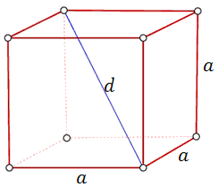
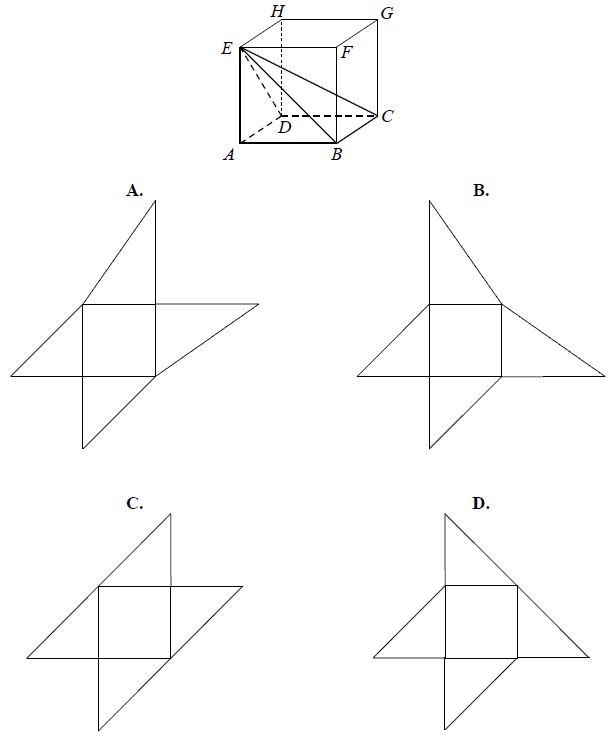
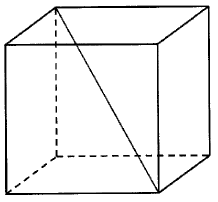
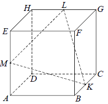
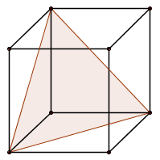

Sześcian
Sześcian jest szczególnym przypadkiem
prostopadłościanu, w którym wszystkie ściany są w kształcie identycznych kwadratów.  Wzór na pole powierzchni
sześcianu: \[P_c = 6a^2\] Wzór na objętość sześcianu: \[V = a^3\] Długość przekątnej sześcianu:
\[d=a\sqrt{3}\] Promień kuli wpisanej w sześcian: \[r=\frac{1}{2}a\] Promień kuli opisanej na
sześcianie: \[R=\frac{1}{2}d=\frac{1}{2}a\sqrt{3}\]
Objętość sześcianu jest równa \(27\) cm
3. Jaka jest suma długości
wszystkich krawędzi tego sześcianu?
A.\( 18 \) cm
B.\( 36 \) cm
C.\( 24 \) cm
D.\( 12 \) cm
B
Objętość sześcianu, w którym przekątna ściany bocznej ma długość
\(\frac{\sqrt{2}}{4}\), jest równa
A.\( \frac{1}{64} \)
B.\( \frac{1}{16} \)
C.\( 16 \)
D.\( 64 \)
A
Suma długości krawędzi sześcianu wynosi \(24\) cm. Pole powierzchni całkowitej tego
sześcianu jest równe:
A.\( 32 \) cm2
B.\( 24 \) cm2
C.\( 16 \) cm2
D.\( 8 \) cm2
B
Objętość sześcianu jest równa \(64\). Pole powierzchni całkowitej tego sześcianu
jest równe
A.\( 512 \)
B.\( 384 \)
C.\( 96 \)
D.\( 16 \)
C
Objętość sześcianu jest równa \(27\). Pole powierzchni całkowitej tego sześcianu
jest równe
A.\( 54 \)
B.\( 18 \)
C.\( 12\sqrt{3} \)
D.\( 24\sqrt{3} \)
A
Pole powierzchni jednej ściany sześcianu jest równe \( 4 \). Objętość tego
sześcianu jest równa
A.\(6 \)
B.\(8 \)
C.\(24 \)
D.\(64 \)
B
Suma długości wszystkich krawędzi sześcianu jest równa \(24\). Objętość tego
sześcianu jest równa
A.\( 64 \)
B.\( 27 \)
C.\( 24 \)
D.\( 8 \)
D
Objętość sześcianu jest równa \(27\). Długość przekątnej tego sześcianu jest równa
A.\( 2\sqrt{2} \)
B.\( 3\sqrt{2} \)
C.\( 2\sqrt{3} \)
D.\( 3\sqrt{3} \)
D
Dany jest sześcian \(ABCDEFGH\). Siatką ostrosłupa czworokątnego \(ABCDE\) jest

B
Krawędź sześcianu ma długość \(9\). Długość przekątnej tego sześcianu jest równa

A.\( \sqrt[3]{9} \)
B.\( 9\sqrt{2} \)
C.\( 9\sqrt{3} \)
D.\( 9+9\sqrt{2} \)
C
Przekątna sześcianu ma długość \(3\). Pole powierzchni całkowitej tego sześcianu
jest równe
A.\( 54 \)
B.\( 36 \)
C.\( 18 \)
D.\( 12 \)
C
Pole powierzchni całkowitej sześcianu jest równe \(24\) cm
2. Objętość
tego sześcianu jest równa
A.\( 8 \) cm3
B.\( 16 \) cm3
C.\( 27 \) cm3
D.\( 64 \) cm3
A
Dany jest sześcian o przekątnej długości \(4\sqrt{3}\). Objętość tego sześcianu
wynosi
A.\( 16 \)
B.\( 16\sqrt{3} \)
C.\( 64 \)
D.\( 64\sqrt{3} \)
C
Pole powierzchni całkowitej sześcianu jest równe \(54\). Długość przekątnej tego
sześcianu jest równa
A.\( \sqrt{6} \)
B.\( 3 \)
C.\( 9 \)
D.\( 3\sqrt{3} \)
D
Długość krawędzi sześcianu zwiększono o \(20\%\). Oblicz, o ile procent wzrosła
objętość tego sześcianu.
\(72{,}8\%\)
Przekątna sześcianu ma długość \(9\). Oblicz pole powierzchni całkowitej tego
sześcianu.
\(162\)
Oblicz sinus kąta między przekątną sześcianu, a jego płaszczyzną podstawy.
\(\frac{\sqrt{3}}{3}\)
Punkty \(K\), \(L\) i \(M\) są środkami krawędzi \(BC\), \(GH\) i \(AE\) sześcianu
\(ABCDEFGH\) o krawędzi długości \(1\) (zobacz rysunek). Oblicz pole trójkąta \(KLM\). 
\(\frac{3\sqrt{3}}{8}\)
Krawędź sześcianu jest o \(4\) krótsza od jego przekątnej. Oblicz pole powierzchni
całkowitej tego sześcianu.
\(P_c=96+48\sqrt{3}\)
Długość krawędzi sześcianu jest o \(2\) krótsza od długości jego przekątnej. Oblicz
długość przekątnej tego sześcianu.
\(3+\sqrt{3}\)
Przekątna ściany sześcianu ma długość \( 5\sqrt{2} \). Pole powierzchni tego
sześcianu jest równe:
A.\(5 \)
B.\(25 \)
C.\(150 \)
D.\(125 \)
C
Pole powierzchni całkowitej sześcianu jest równe \(12\). Suma długości wszystkich
krawędzi tego sześcianu jest równa
A.\( 12\sqrt{2} \)
B.\( 8\sqrt{2} \)
C.\( 6\sqrt{2} \)
D.\( 3\sqrt{2} \)
A
Sześcian o krawędzi \(6\) przecięto płaszczyzną zawierającą przekątną dolnej
podstawy i jeden wierzchołek drugiej (patrz rysunek). Oblicz pole otrzymanego przekroju. 
\(P=18\sqrt{3}\)
Przekątna ściany sześcianu ma długość \(2\). Pole powierzchni całkowitej tego
sześcianu jest równe
A.\( 24 \)
B.\( 12\sqrt{2} \)
C.\( 12 \)
D.\( 16\sqrt{2} \)
C